VirtualBox olikin jo valmiiksi asennettuna omaan lokaaliin ympäristöön, joten hain Debian 13-levykuvan kurssin "Oheismateriaalia"-osiosta ja sen iskin VirtualBox:in luomalla uuden koneen "New"-napista. Koneelle annoin nimeksi "deb_vm1", osoitin sen käyttämään ladattua levykuvaa sekä ruksasin pois "Proceed with unattended installation" jotta voin itse päättää resurssien allokoimisesta virtuaalilaitteelle.
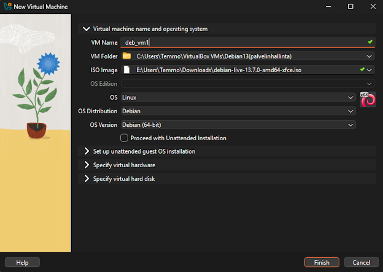
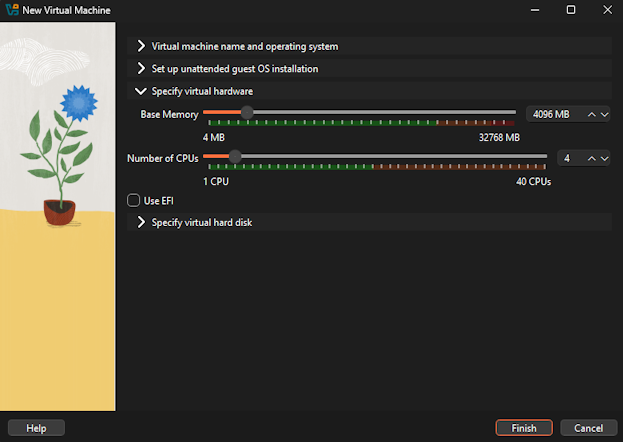
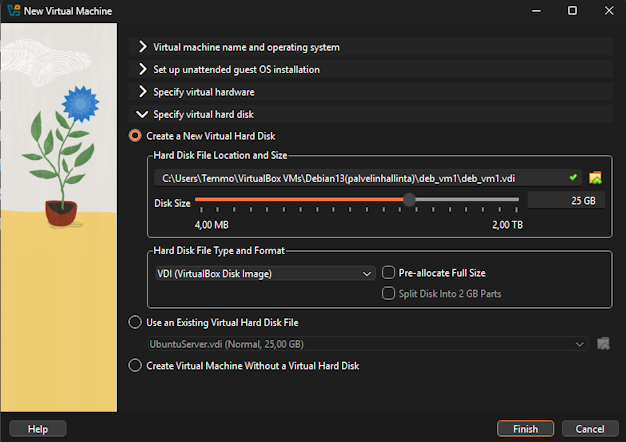
Tuota pikaa oli kone luotu. Tuplaklikkasin sen käyntiin ja valitsin suoraan käyttöjärjestelmän asennuksen, kokeilematta sitä ensin. Nämä asetukset määrittelin laitteelle:
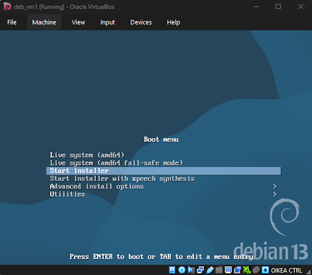
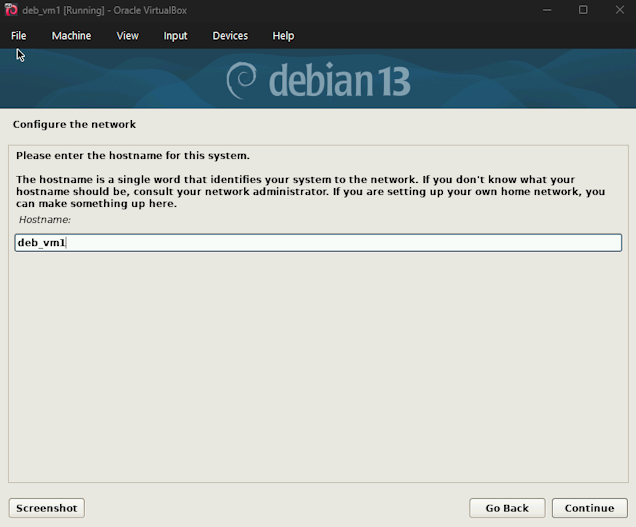
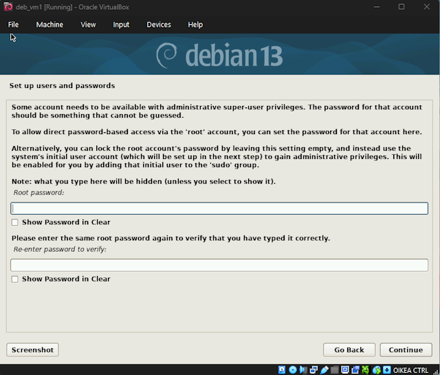
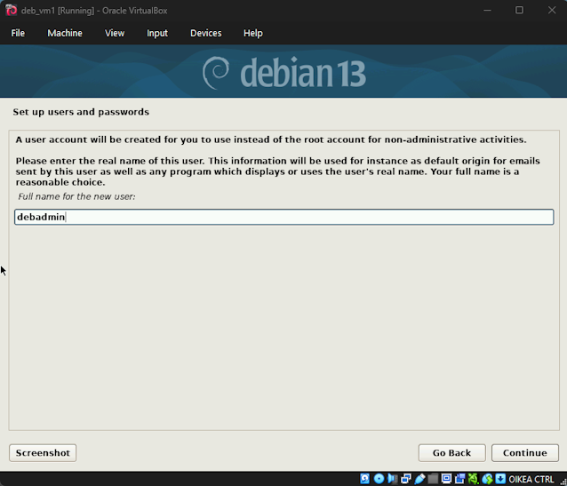
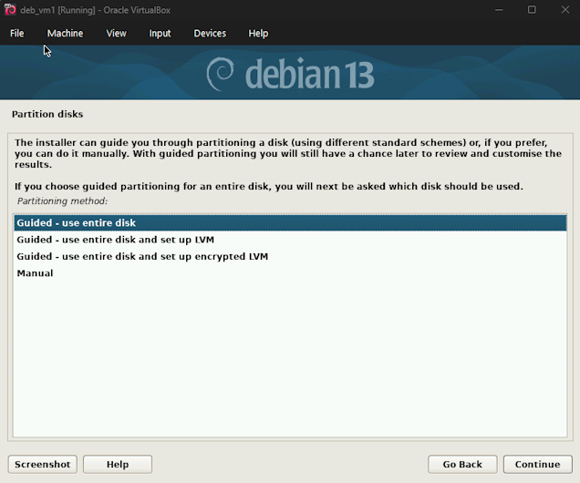
Ja käyttöjärjestelmän asentuminen sekä uudelleenkäynnistys tapahtui lopulta vajaassa viidessä minuutissa. Kirjauduin sisään tunnuksillani, avasin Terminalin ja ajoin "sudo apt-get update"-komennon hakeakseni päivitykset. Tämä kuitenkin antoi virheen, sillä paketinhallinta yritti hakea päivityksiä oletuksena levykuvalta jolta käyttöjärjestelmä oli asennettu.
Tässä käytin apuna Punnalan raporttia (T.Punnala 2025: Tietokone ja käyttöjärjestelmä"), joka ohjeisti korjaamaan Nano-tekstieditorilla "/etc/apt/sources.list"-tiedoston. Eli sudo nano /etc/apt/sources.list ja muutetaan lähde kommentiksi laittamalla risuaita-merkki lähteen "deb cdrom" eteen. Sitten korjaukset manuaalisesti kirjoittaen ja Ctrl+S + Ctrl+X.
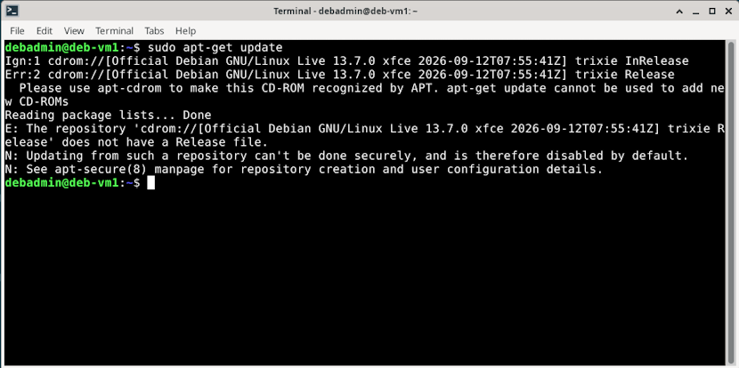
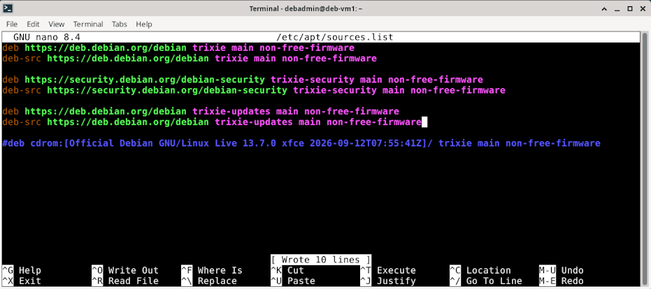
Lopuksi vielä ne päivitykset ajamalla sudo apt-get update |sudo apt-get -y dist-upgrade. Näitten lisäksi palomuurin asennus komennolla sudo apt-get -y install ufw, ja käyttöönotto samantien sudo ufw enable.
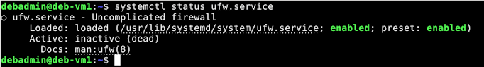
Aloitin siis valitsemalla kotimaisen "UpCloud"-pilvipalvelutarjoajan, sillä heidän kokeilujaksonsa kiinnitti huomioni. Ensikertalainen saisi 30-päivän pituisessa kokeilussa 500 euron edestä krediittejä, joilla kustannettaisiin aloituspaketin kulut.
Rekisteröidyin UpCloud:n palveluun, syötin tarvittavat tiedot henkilöllisyyden varmistamiseen ja loin uuden palvelimen "Deploy now"-napilla. Tälle määritin sijainniksi "FI-HEL2"-datakeskuksen, sillä luulisin tällä olevan vähemmmän latenssia itselleni. Edullisin "Starter"-suunnitelma olisi juuri passeli yhdelle VPS-palvelimelle näin alkuun, sillä valitsemalla sopivan käyttöjärjestelmän olisivat myös laitteistovaatimukset "kevyitä".
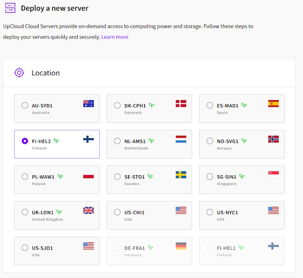
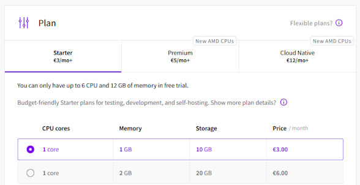
Valitun "Starter"-suunnitelman mukaan palvelimella olisi 10 GB:n verran tallennustilaa. Automaattisia varmuuskopioita en valinnut, sillä tarvetta ei ollut. Käyttöjärjestelmäksi Debian 13 (Trixie) ja verkkoasetuksista oletuksena päällä olevat asetukset.
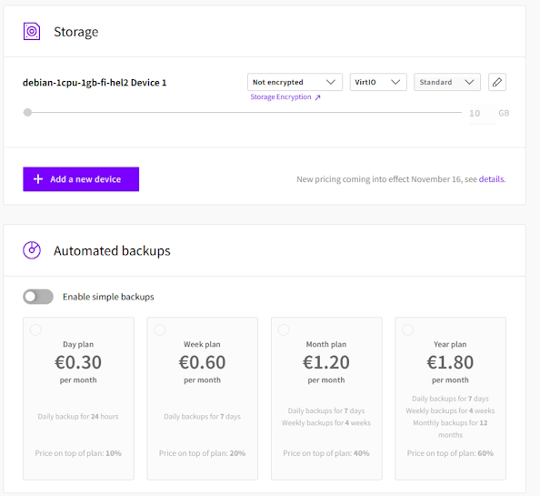
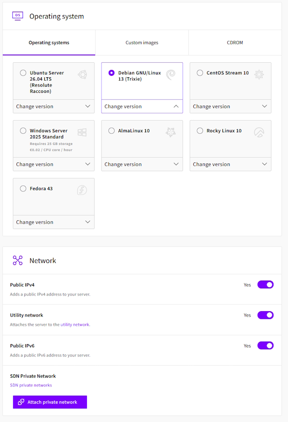
Virtuaalipalvelimen kirjautumistavaksi valittiin SSH-avaimet, jotka olin luonut "debadmin"-virtuaalikoneella . Tämä tehtiin sekä koulukannettavani että koti-pöytäkoneeni Windows-järjestelmän Terminalissa komennolla "ssh-keygen". Molemmat avaimet tallensin UpCloud-SSH avainketjuun.
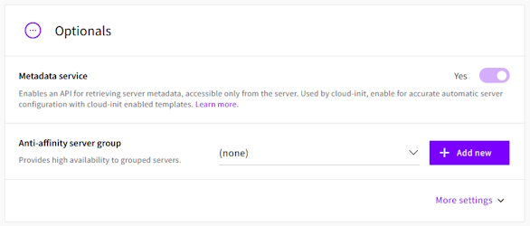
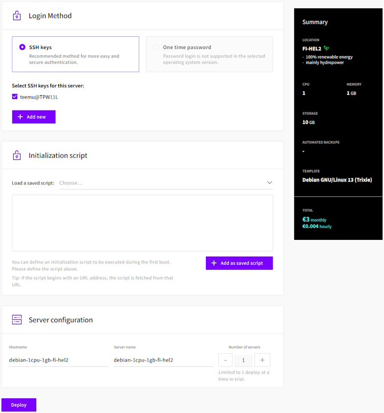
Palvelin oli näin luotu, ja muodostin siihen yhteyden Terminalin kautta komennolla "ssh root@94.237.106.231" (ssh + käyttäjä + @ + palvelimen osoite).
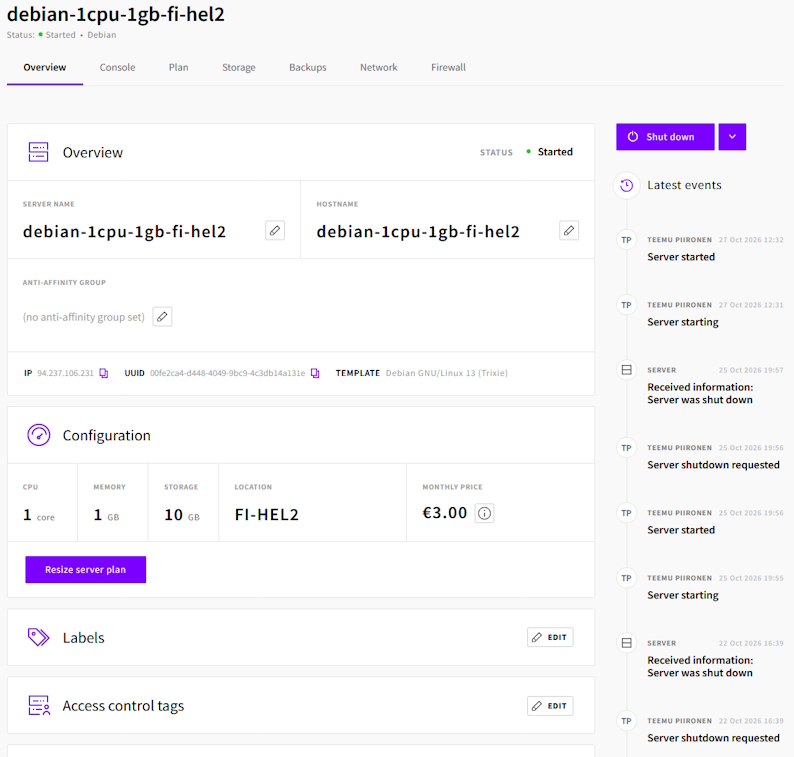
Lisäsin sinne uuden käyttäjän sudo-oikeuksilla komennolla "adduser piipo" ja "usermod -aG sudo piipo". Loin uuden "authorized_keys"-tiedoston tämän käyttäjän kotihakemistoon, ja talletin sinne oman kannettavani SSH-avaimen (nano authorized_keys). Asensin päivitykset (sudo apt-get update, sudo apt-get upgrade), palomuurin (apt-get install ufw) sekä apache-webpalvelimen (sudo apt install apache). Konfiguroin palomuurin päästämään läpi SSH:n oletusportin (22/tcp) liikenteen, ja aktivoin sen komennolla "ufw enable".
T.Punnala, 2025: h1-installing-linux-md | Luettavissa https://github.com/punnalathomas/linux-course/blob/main/h1-installing-linux.md | Luettu 29.10.2026